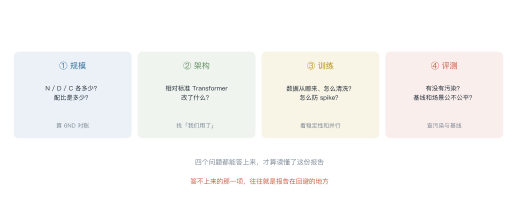
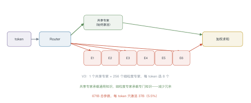
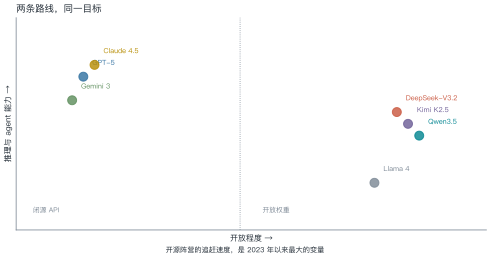
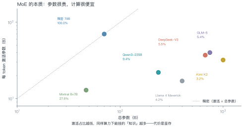
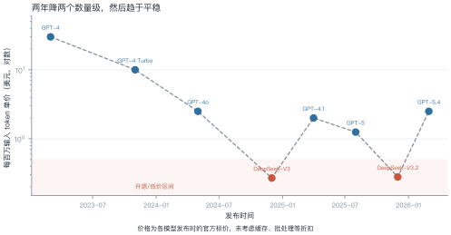

第 25 讲 热门模型解剖¶
本讲位置
全书的收束。前 24 讲把零件拆开讲了一遍，本讲把零件装回四台"真机"：GPT、DeepSeek、Claude、Gemini——看它们各自在哪一层做了不同的取舍。
📅 事实核查至 2026-11
本讲的规格与定价来自各家技术报告与官方文档（2025–2026），已与两个聚合站交叉核对；标注 ⚠️ 的为尚未独立复现的信息。
学习目标¶
学完本讲，你应该能够：
- 用"规模 / 架构 / 训练 / 评测"四个问题快速读懂一份技术报告；
- 说出 DeepSeek 的 MLA 与细粒度 MoE 各解决什么问题；
- 解释 GPT-5 的"路由式统一系统"与 Claude 的"混合推理"有什么共同点；
- 用参数、激活占比、单价算清一次推理的成本。
0 直觉：读报告只看四件事¶
技术报告动辄几十页，但真正需要核对的只有四件事：

| 问题 | 找什么 | 怎么验 |
|---|---|---|
| 规模 | \(N\)、\(D\)、\(C\) | 用 \(C\approx6ND\) 对账 |
| 架构 | 相对标准 Transformer 改了什么 | 找"我们采用/提出" |
| 训练 | 数据来源、并行策略、稳定性处理 | 看 loss 曲线与 spike 处理 |
| 评测 | 污染、基线、场景 | 查去污染方法与对照 |
可直接复制的填写模板见技术报告阅读模板。
一句话总结
模型之间的差别，九成落在"架构改了什么"和"数据怎么配"这两件事上，剩下的才是规模。
1 GPT 系列：从规模到路由¶
| 代际 | 关键变化 | 留下的问题 |
|---|---|---|
| GPT-3 | 175B + 上下文学习 | 只会补全，不会听话 |
| GPT-4 | 多模态输入 + 对齐 | 成本高、延迟大 |
| GPT-4o | 端到端多模态，延迟接近实时 | 推理能力有限 |
| o1 | 长思维链 RL，推理时扩展 | 慢、贵 |
| GPT-5 | 路由式统一系统：实时判断该用"快模型"还是"推理模型" | 路由本身可解释性差 |
GPT-5 的关键设计：不再让用户选模型，而是用一个轻量路由在同一次请求内决定走哪条路径。简单问题走快模型（低延迟），复杂问题自动切到推理模型（长 CoT）。
这解决了一个真实痛点：用户不知道自己的问题"有多难"。
2 DeepSeek：把成本压到极致¶
DeepSeek 的路线很清晰：用架构创新换成本。三个关键件：

| 组件 | 作用 | 效果 |
|---|---|---|
| MLA（多头潜在注意力） | 把 KV 压到低维潜空间 | KV cache 降约 10 倍 |
| 细粒度 MoE | 256 个小专家选 8 个 + 共享专家 | 同算力下参数更多、冗余更少 |
| FP8 训练 | 权重与激活用 FP8 | 训练显存与带宽减半 |
2.1 MLA 为什么能省十倍¶
标准多头注意力要为每个 token 存 K 和 V，每层每头都是 \(d_h\) 维。层数一多、头数一多，KV cache 就成了显存黑洞（第 13 讲算过：7B 模型 128K 上下文要 69 GB）。
MLA 的做法：先把 K/V 压到一个低维潜向量，用时再投影回来。
- 存储的是潜向量（如 512 维），而不是每头独立的 K/V；
- 推理时用上投影矩阵还原出 K/V，多出来的计算相对带宽开销可以忽略；
- 结果：KV cache 降约 10 倍，128K 上下文的显存从 69 GB 降到个位数。
代价：多了一次投影计算，且训练时要保证潜空间不塌缩——这也是为什么 MLA 论文花了大量篇幅讲初始化与归一化。
例 25.1 算一下"参数很贵、计算很便宜"¶
DeepSeek-V3：总参数 671B，每 token 激活 37B。
显存（bf16）：\(671\times10^9\times2\ \text{B}=1.34\ \text{TB}\)——必须多卡。 算力：每 token 约 \(2\times37\text{B}=74\) GFLOPs，与一个 37B 稠密模型相当。
这就是 MoE 的本质：显存按总参数付，算力按激活参数付。
从这个例子里能读出三件事
- MoE 不是"免费变大"：显存账单是实打实的 1.34 TB；
- 激活占比越低，推理越便宜：5.5% 意味着算力只有稠密的 1/18；
- 部署 MoE 的瓶颈在显存，不在算力——这和 L11 的结论一致。
3 Claude：把"安全"写进训练目标¶
Claude 的差异化在对齐方法，不在架构：
- Constitutional AI：用一组明文规则（"宪法"）让模型自我批评、自我修订，减少对人工标注的依赖；
- 混合推理（Claude 3.7 起）：同一个模型可切换"即时回答"与"扩展思考"，用户按需付费；
- 长上下文：Opus 4.6 起支持 100 万 token（beta）。
和 GPT-5 的共同点：都在做"按需分配算力"——GPT-5 用路由，Claude 用开关。区别是 GPT-5 自动，Claude 让用户选。
3.1 Constitutional AI 的两个阶段¶
- 自我批评：模型对自己的回答按"宪法"逐条挑毛病，再改写；
- 偏好学习：用改写前后的回答对训练奖励模型，做 RLHF。
为什么这很聪明：把"什么算有害"从隐式的标注员偏好变成了明文的规则。规则可以审计、可以修改、可以跨语言复用——而标注员的偏好不行。
代价是规则本身的覆盖度决定上限：宪法里没写的风险，模型学不到。
4 Gemini：原生多模态¶
Gemini 的路线是"从预训练第一天就多模态"，而不是"给语言模型加一个视觉编码器"。
| 特点 | 说明 |
|---|---|
| 原生多模态 | 文本、图像、音频、视频共用一套 tokenizer 与 Transformer |
| 超长上下文 | 100 万 token 起步，直接吃整本书/整段视频 |
| MoE 骨干 | 用稀疏激活控制推理成本 |
代价：训练成本极高，且"统一 tokenizer"意味着任何模态的改进都要重训整个模型。
5 开源阵营：追赶的速度¶


例 25.2 算一次请求的成本¶
一次请求：1000 input token + 500 output token。
| 模型 | 输入单价（$/M） | 输出单价（$/M） | 单次成本 |
|---|---|---|---|
| GPT-5 级 | 1.25 | 10 | $0.0063 |
| DeepSeek-V3 | 0.27 | 1.10 | $0.00082 |
怎么用这个数：如果一天 10 万次请求，差价是 $548/天，约 $16 万/年。
6 横向对比¶
| GPT-5 | Claude 4.5 | Gemini 3 | DeepSeek-V3.2 | Qwen3.5 | |
|---|---|---|---|---|---|
| 开放 | 闭源 | 闭源 | 闭源 | MIT | Apache 2.0 |
| 骨干 | 未公开 | 未公开 | MoE | MoE 671/37 | MoE 397/17 |
| 上下文 | 400K | 200K–1M | 1M | 128K | 256K |
| 特色 | 路由 | 宪法 AI + 混合推理 | 原生多模态 | 极致性价比 | 开源 + 原生视觉 |
读这张表的正确方式：不要比"谁最强"，要比"谁在你的场景里性价比最高"。

6.1 怎么选：三个问题¶
- 数据能不能出内网？ 不能 → 只能自部署开源模型（Qwen / DeepSeek / Llama）。
- 一天多少次请求？ 低频 → 用 API，省运维；高频（>10 万/天）→ 算一下自部署的摊薄成本。
- 要不要长上下文？ 需要 100 万 token → 目前只有少数几家；否则 128K 够用。
一个常见的误判：以为"开源 = 免费"。真实的开源成本包括 GPU 折旧、运维人力、微调数据与工程——小规模下往往比 API 贵。
6.2 一个选型复盘¶
某团队做法律合同审阅，最初选了最强闭源模型，月成本 8 万，准确率 88%。半年后换成"中等开源模型 + 更好的检索 + 规则后处理"，月成本 1.2 万，准确率 91%。
三个动作：
- 把"模型能力"换成"系统能力"：合同里的条款位置固定，用规则先定位再让模型判断，比让模型读全文更准；
- 按任务分级：80% 的常规条款走小模型，20% 的复杂条款才调大模型；
- 用评测集说话：自建 300 条标注数据，每次换模型都跑一遍，而不是看榜单。
结论：模型选型只是系统工程的一环。把检索、规则、分级路由做对，常常比换一个更强的模型更有效。
7 工程坑¶
- 别拿总参数当成本：MoE 的 671B 是显存账，算力账看 37B。
- 别信"支持 1M 上下文"：能装 ≠ 能用，用 RULER 类测试验一下。
- 单价会变：2025–2026 年主流模型降过 3–5 次价，选型要按当期价格算。
- 开源模型的"免费"有隐性成本：部署、运维、微调都要人。
- 路由/开关类设计影响可复现性：同一个 prompt 可能走不同路径。
def request_cost(in_tok: int, out_tok: int,
in_price: float, out_price: float) -> float:
"""单次请求成本（美元）。price 单位：美元 / 百万 token"""
return (in_tok * in_price + out_tok * out_price) / 1e6
models = {
"GPT-5 级": (1.25, 10.0),
"Claude 4.5": (5.0, 25.0),
"DeepSeek-V3": (0.27, 1.10),
"Qwen3.5": (0.4, 1.2),
}
for name, (pi, po) in models.items():
c = request_cost(1000, 500, pi, po)
print(f"{name:<12} ${c:.5f}／次 日 10 万次 ≈ ${c * 1e5:,.0f}")
8 论文与延伸¶
| 年份 | 文献 | 一句话贡献 |
|---|---|---|
| 2024 | DeepSeek-V2（MLA） | 低维潜空间压缩 KV |
| 2024 | DeepSeek-V3 | 671B/37B，FP8 训练 |
| 2025 | DeepSeek-R1 | 纯 RL 的推理能力 |
| 2025 | GPT-5 发布说明 | 路由式统一系统 |
| 2025 | Claude 4 | 混合推理与编码 agent |
| 2025 | Qwen3 | 开源 + 混合思考 |
| 2025 | Kimi K2 | 1T/32B 的极致稀疏 |
9 习题¶
🟢 概念题
- GPT-5 的"路由"与 Claude 的"混合推理"解决的是同一个问题吗？
- 为什么 MoE 模型的部署瓶颈在显存而不是算力？
🟡 推导题
- 用 (25.1) 算：某 MoE 总参数 400B、激活 17B，它的激活占比与"等效稠密规模"。
- 用例 25.2 的单价，算"每天 10 万次请求"下 GPT-5 与 V3 的年成本差。
🔴 实现题
- 跑通
request_cost，把 2026 年主流模型的定价填进去，画一张"成本 vs 上下文长度"图。 - 找一份 2025 年后的技术报告，用四问法写一页阅读笔记。
10 本讲小结¶
四问法
规模 · 架构 · 训练 · 评测
三个数字
- DeepSeek-V3：671B / 37B（5.5%）
- 一次请求成本差 7.7 倍
- 开源与闭源的差距缩到"几个月"
两条路线
闭源：按需分配算力（路由 / 开关） 开源：用架构换成本（MLA / 细粒度 MoE / FP8）
一句话
模型之间的差别，九成在"架构改了什么"和"数据怎么配"。
来源¶
- 各模型规格与定价来自官方技术报告与 API 文档，2025–2026 年数据，核查日期 2026-11；标注 ⚠️ 的条目尚未独立复现。